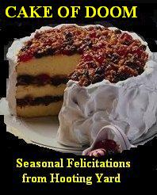

Friday, December the 24th, 2004
back to: title, date or indexes
Many readers may be unaware that there are other sites on the web, apart from Hooting Yard, which are worth a visit. We asked Mrs Gubbins to recommend just a few of her favourites as a little Christmas treat. So off you go a-roaming—but don't forget to come back!
Mrs Gubbins directs your attention to:
